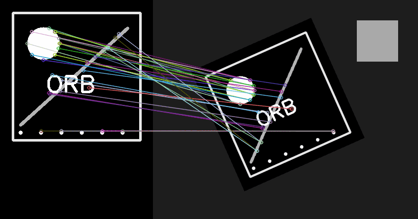
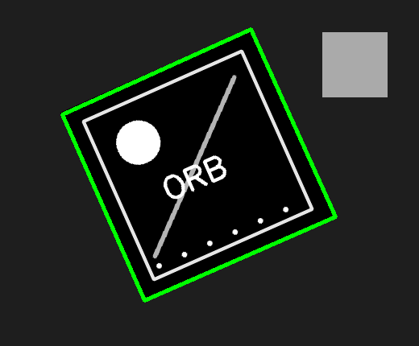

8. Características locais e Feature Matching¶
O que você aprenderá¶
Neste capítulo, você aprenderá a localizar pontos visualmente distintivos e a descrevê-los de forma que possam ser reencontrados em outra imagem. Essa abordagem é muito mais flexível que comparar pixels de um template rígido.
Ao final, você deverá conseguir:
- explicar por que regiões uniformes são ruins para correspondência;
- compreender keypoints e descritores;
- diferenciar detector de descritor;
- entender a lógica do ORB;
- interpretar descritores binários;
- compreender distância de Hamming;
- usar
BFMatcher; - diferenciar
crossCheckde teste de razão; - compreender correspondências falsas;
- explicar o papel do RANSAC;
- estimar uma homografia a partir de matches;
- interpretar inliers e outliers;
- projetar os cantos de um objeto na cena;
- reconhecer situações em que homografia não é um bom modelo.
Métodos baseados em características locais revolucionaram tarefas como reconhecimento de objetos planos, panorama e registro de imagens. SIFT foi sistematizado por Lowe (2004), enquanto ORB foi proposto como alternativa eficiente baseada em descritores binários (RUBLEE et al., 2011).
8.1 Por que nem todo pixel serve como ponto de referência?¶
Imagine uma parede totalmente branca. Se você recortar um pequeno quadrado dessa parede, é difícil descobrir de qual posição ele veio: muitos recortes são iguais.
Agora pense em uma quina de janela, uma letra ou um cruzamento de linhas. Essa região possui estrutura distintiva.
Analogia: mapa rodoviário¶
Um trecho reto de estrada é pouco informativo. Um cruzamento entre três rodovias próximo de uma ponte funciona como referência muito melhor.
8.2 Keypoint e descritor¶
Um keypoint representa uma posição visualmente interessante, podendo incluir escala e orientação.
Um descritor é um vetor que resume a aparência local ao redor do ponto.
Analogia: pessoa e ficha de identificação¶
O keypoint é “onde a pessoa está”. O descritor é uma ficha com características que ajudam a reconhecê-la em outro local.
8.3 Detector e descritor são papéis diferentes¶
Conceitualmente:
Alguns algoritmos oferecem as duas funções em conjunto.
8.4 ORB¶
ORB combina ideias eficientes para criar keypoints e descritores binários (RUBLEE et al., 2011).
De forma simplificada:
- detecta cantos com FAST;
- trabalha em múltiplas escalas;
- estima orientação;
- gera uma versão orientada do BRIEF.
Exemplo 1¶
orb = cv2.ORB_create(nfeatures=1000)
keypoints, descritores = orb.detectAndCompute(
cinza,
None
)
print("Keypoints:", len(keypoints))
print("Descritores:", descritores.shape)
8.5 Desenhando keypoints¶
visual = cv2.drawKeypoints(
imagem,
keypoints,
None,
flags=cv2.DRAW_MATCHES_FLAGS_DRAW_RICH_KEYPOINTS
)
A representação pode mostrar posição, escala e orientação.
8.6 Descritores binários¶
ORB produz descritores armazenados como bytes, representando sequências de bits.
Exemplo conceitual:
Cada comparação local contribui para a assinatura.
A métrica natural é a distância de Hamming.
8.7 Distância de Hamming¶
A distância de Hamming conta quantos bits diferem.
Quanto menos bits diferentes, mais próximos são os descritores.
Para ORB:
A métrica precisa combinar com o descritor
Descritores binários e descritores de ponto flutuante possuem geometrias diferentes. Não escolha a métrica apenas porque um exemplo na internet a utilizou.
8.8 Brute-Force Matcher¶
O Brute-Force Matcher compara descritores buscando os mais próximos.
Distância pequena indica maior similaridade segundo a métrica.
8.9 crossCheck¶
Com:
uma correspondência A→B só é aceita quando B também considera A seu melhor par.
Analogia: amizade recíproca¶
Não basta A dizer “B é meu melhor parceiro”; B precisa responder o mesmo.
Isso reduz alguns matches ambíguos, mas também elimina possíveis correspondências válidas.
8.10 KNN e teste de razão¶
Outra estratégia é buscar os dois melhores vizinhos:
Depois aplicamos o teste de razão inspirado na estratégia de Lowe (2004):
bons = []
for melhor, segundo in pares:
if melhor.distance < 0.75 * segundo.distance:
bons.append(melhor)
Intuição¶
Não basta o melhor candidato ser bom. Ele precisa ser claramente melhor que a alternativa.
Analogia: reconhecimento com dúvida¶
Se duas pessoas parecem igualmente parecidas com a fotografia, a decisão é ambígua. Se uma é muito mais parecida que a segunda, a correspondência é mais confiável.
8.11 O limiar 0,75 não é lei universal¶
Valor mais rígido, como 0.60:
- menos matches;
- tende a aumentar qualidade média.
Valor permissivo, como 0.90:
- mais matches;
- aumenta risco de ambiguidades.
Avalie a quantidade de inliers geométricos, não apenas o número bruto de matches.
8.12 Visualizando correspondências¶
visual = cv2.drawMatches(
img1,
kp1,
img2,
kp2,
bons,
None,
flags=cv2.DrawMatchesFlags_NOT_DRAW_SINGLE_POINTS
)
Linhas muito cruzadas podem indicar correspondências incorretas, embora a aparência visual isolada não substitua uma validação geométrica.
8.13 Por que matches falsos aparecem?¶
Causas comuns:
- padrões repetitivos;
- pouca textura;
- blur;
- oclusão;
- reflexos;
- descritores parecidos por acaso;
- grande mudança de perspectiva.
Imagine um prédio com 50 janelas idênticas: uma janela isolada não informa qual andar ou coluna é a correta.
8.14 De matches locais para uma transformação global¶
Se o objeto é aproximadamente plano, boas correspondências devem concordar com uma mesma homografia.
Precisamos extrair coordenadas:
pts1 = np.float32([
kp1[m.queryIdx].pt
for m in bons
]).reshape(-1, 1, 2)
pts2 = np.float32([
kp2[m.trainIdx].pt
for m in bons
]).reshape(-1, 1, 2)
8.15 RANSAC¶
RANSAC estima um modelo mesmo quando existem outliers.
Analogia: testemunhas¶
Imagine dez testemunhas descrevendo a posição de um carro. Sete fornecem relatos coerentes e três estão erradas. Em vez de fazer uma média cega, procuramos o grupo que concorda com uma explicação geométrica consistente.
A máscara indica quais correspondências foram consideradas inliers.
8.16 Inliers e outliers¶
- inlier: match compatível com a homografia estimada;
- outlier: match que não concorda com o modelo.
Uma taxa útil:
Não existe limiar universal, mas essa proporção é mais informativa que quantidade bruta de matches.
8.17 Projetando o objeto na cena¶
Com a homografia, podemos transformar os quatro cantos da referência.
h, w = referencia.shape[:2]
cantos = np.float32([
[0, 0],
[w - 1, 0],
[w - 1, h - 1],
[0, h - 1]
]).reshape(-1, 1, 2)
projetados = cv2.perspectiveTransform(
cantos,
H
)
Depois desenhamos o quadrilátero na cena.
8.18 Quando a homografia é apropriada?¶
Funciona bem quando:
- o objeto é aproximadamente plano;
- ou a câmera gira sem grande paralaxe.
Exemplos:
- capa de livro;
- placa;
- cartaz;
- fachada distante;
- quadro.
8.19 Quando ela falha?¶
Uma cena 3D com objetos em profundidades muito diferentes não é descrita perfeitamente por uma única homografia.
Analogia: fotografar uma sala¶
A parede, a mesa e uma cadeira próxima não pertencem ao mesmo plano. Uma transformação que alinha perfeitamente a parede pode não alinhar a cadeira.
8.20 ORB versus SIFT¶
| Aspecto | ORB | SIFT |
|---|---|---|
| descritor | binário | ponto flutuante |
| métrica típica | Hamming | L2 |
| custo | menor | geralmente maior |
| robustez | boa em muitos casos | muito robusto a escala/rotação |
| uso didático | excelente para eficiência | excelente para compreender features clássicas |
SIFT foi desenvolvido para produzir características invariantes a escala e robustas a variações de orientação (LOWE, 2004).
8.21 Exemplo integrado do capítulo¶
O código do capítulo 8 constrói uma referência e uma cena transformada, realiza ORB, matching e homografia.
Pipeline:
referência
↓
cena transformada
↓
ORB
↓
keypoints + descritores
↓
KNN Hamming
↓
teste de razão
↓
RANSAC
↓
inliers
↓
homografia
↓
projeção dos cantos


8.22 Erros comuns¶
| Sintoma | Causa provável | Correção |
|---|---|---|
des is None |
pouca textura | use região mais informativa/ajuste detector |
| poucos keypoints | parâmetros rígidos | aumente nfeatures/revise imagem |
| matches muito ruins | métrica errada | Hamming para ORB |
| muitas linhas cruzadas | ambiguidades | teste de razão/RANSAC |
homografia None |
poucos pares válidos | exija matches suficientes |
| quadrilátero absurdo | poucos inliers/geometria ruim | valide taxa e distribuição |
| sucesso em plano, falha em 3D | modelo inadequado | use geometria 3D/epipolar |
8.23 Perguntas de revisão¶
- Por que uma parede lisa é ruim para matching?
- Qual diferença existe entre keypoint e descritor?
- Por que ORB usa Hamming?
- O que
crossCheckexige? - Qual é a intuição do teste de razão?
- Por que mais matches não significa necessariamente melhor resultado?
- O que é um outlier?
- Para que serve RANSAC?
- Quando uma homografia é apropriada?
- Por que pontos concentrados em uma pequena região são menos estáveis?
Exercícios de fixação¶
Exercício 1¶
Crie uma imagem com texto e formas e visualize os keypoints ORB.
Exercício 2¶
Compare a quantidade de keypoints em uma região uniforme e em uma região texturizada.
Exercício 3¶
Imprima o dtype e a forma dos descritores ORB.
Exercício 4¶
Compare crossCheck=True com KNN + teste de razão.
Exercício 5¶
Teste razões 0.60, 0.75 e 0.90. Registre matches e inliers.
Exercício 6¶
Adicione um padrão repetitivo e observe o número de falsos matches.
Exercício 7¶
Rotacione a referência em 45° e meça quantos inliers permanecem.
Exercício 8¶
Reduza a referência para 60% e repita.
Exercício 9¶
Estime a homografia e desenhe os quatro cantos.
Exercício 10¶
Calcule a taxa inliers / bons_matches.
Exercício 11¶
Altere o limiar de reprojeção do RANSAC e compare a quantidade de inliers.
Exercício 12¶
Troque ORB por SIFT, usando a métrica adequada, e compare tempo e robustez.
Exercício 13¶
Explique por que quatro matches são o mínimo para homografia, mas trabalhar com apenas quatro é arriscado.
Síntese¶
Feature Matching substitui a busca rígida por pixels por uma estratégia baseada em marcos visuais locais. O detector encontra pontos; o descritor cria assinaturas; o matcher sugere pares; e RANSAC verifica se os pares concordam com uma geometria global. Essa separação entre aparência local e consistência geométrica é uma ideia central da visão computacional clássica.
Referências¶
LOWE, David G. Distinctive image features from scale-invariant keypoints. International Journal of Computer Vision, v. 60, n. 2, p. 91-110, 2004.
RUBLEE, Ethan et al. ORB: an efficient alternative to SIFT or SURF. In: IEEE International Conference on Computer Vision. 2011.
SZELISKI, Richard. Computer Vision: Algorithms and Applications. 2. ed. Cham: Springer, 2022.